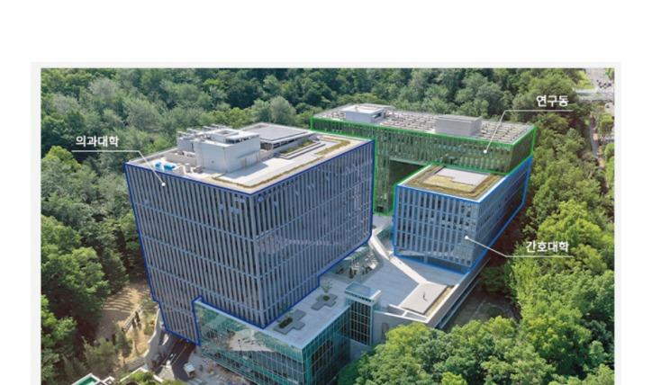

CAMPUS INVITATION
2026. 07. 21. TUE
오후 2시 40분
옴니버스 파크 B3 Lobby층 (L층)
※ 탐방 일정은 상황에 따라 수정될 수 있습니다.
장소: 옴니버스파크 로비 (L층 집합지)
내용: 단체 기념 사진 촬영 및 인원 파악 (오후 3시 정각 투어 시작을 위해 14:40까지 필히 도착)
장소: 옴니버스 의과대학 TBL실
내용: 가홍이 소개 및 투어 안내 프레젠테이션
장소: 옴니버스파크 1층 (야외정원 엘베로 이동)
내용: 의대 대강의실 및 러닝스페이스 투어
장소: 옴니버스파크 2층 야외정원
내용: 캠퍼스 야외정원 및 주요 축제 장소 안내
장소: 옴니버스파크 2층 간호대학
내용: 대강의실, 중강의실, PBL실, 여학생 휴게실
장소: L3 플레이그라운드 (엘베 이동)
장소: L2 러닝그라운드 (엘베 이동)
장소: 옴니버스파크 B3 로비층 (엘베 이동)
내용: 플렌티(Plenty), 컨벤션홀, 편의점 및 꽃집 투어
장소: 성모병원별관 라온센터
장소: 성모병원별관 요나센터
내용: 라온센터에서 이동 후 동아리방 탐방
장소: 성의회관 10, 11층 도서관
장소: 성의회관 9층 열람실
장소: 성의회관 8층 스타트센터
장소: 성의교정 학식당
안내: 대학 학식을 함께 무료로 맛본 뒤, 17:50분까지 의대 TBL실로 복귀
장소: 옴니버스 의과대학 TBL실
내용: 투어 발표 마무리 진행, 질의응답(Q&A), 기념 선물 증정 및 소중한 추억을 남기는 사진 촬영
옴니버스 파크는 의과대학, 연구동, 간호대학이 모인 복합 융합 공간입니다. 아래 전경을 확인하시고 L층(B3) 로비로 집결해 주시기 바랍니다.

📍 집결 상세: 옴니버스 파크 L층 (B3층) 로비
※ 버스 대기 시간 및 환승 시간을 고려하면 최대 2시간까지 소요될 수 있으니, 오후 2시 40분까지 넉넉하게 도착하실 수 있도록 출발시각 및 버스 배차간격 확인에 각별히 유의해 주시기 바랍니다.
지하철역 출구에서 성모병원 방면 도보 약 10~14분 소요
탐방 관련 문의사항이나 부득이한 지각 연락은 아래 연락처로 연락 주시기 바랍니다.
🚨 지각 발생, 긴급 상황 또는 길을 헤매는 경우에는 지체하지 마시고 즉시 주변 친구(동행인), 카카오톡 단체방, 또는 인솔 선생님께 필히 연락을 취해 주시기 바랍니다.